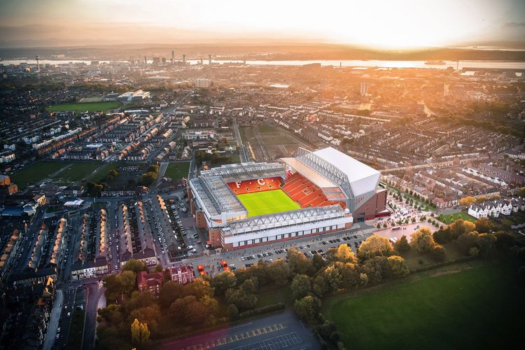

1884년에 개장한 안필드는 원래 존 오렐(John Orrell)의 소유였는데, 오렐은 지역의 축구팀인 에버튼 FC에게 임대료를 싸게 받고 경기장을 빌려주었다. 안필드의 개장 경기는 1884년 9월 28일에 열렸으며 에버튼이 얼스타운(Earlstown)을 5-0으로 이겼다. 에버튼이 경기장을 사용하고 있던 기간 동안 안필드는 평균 8,000명의 관중이 들어오는 작은 구장이었다.
1891년, 리버풀 시의회 의원이자 에버튼의 구단주인 존 하울딩이 친구인 오렐에게서 구장을 사들였는데, 홀딩은 에버튼의 구단주임에도 구장을 사들이고 얼마 안 돼 에버튼 구단 측에 구장 임대료를 100파운드에서 250파운드로 올릴 것이라고 통보했다. 그는 매년 안필드의 임대료를 높여 자신의 구단 재정에 문제를 주는 일을 반복하였고, 이렇게 구단을 매개체로 본인의 이익을 계속 챙기려는 모습에 화가 난 대주주들이 투표를 통해 그를 축출시켰다. 이로 인해 에버튼 구단은 안필드를 버리고 구디슨 파크로 옮겨갔다. 세입자가 졸지에 떠나버리자 구장 운영으로 수익을 내야 했던 하울딩은 아예 자기가 축구 구단을 하나 만들기로 결심했고, 이렇게 만든 구단이 바로 리버풀 FC이다. 안필드에서 리버풀의 첫 경기는 1892년 9월 1일에 열린 로더럼 타운[3]과의 경기로 리버풀이 7:1 승리를 거뒀다.
1895년에 3,000명 수용 규모의 스탠드를 현재의 메인 스탠드 위치에 건설했고, 1903년에는 현재의 안필드 로드 엔드 스탠드 위치에 나무와 골함석을 이용해 또 다른 스탠드를 만들었다.
1906년에 1부 리그 우승을 한 뒤, 월턴 브렉 로드(Walton Breck Road)와 켐린 로드(Kemlyn Road)를 따라 새로운 스탠드가 각각 하나씩 만들어졌다. 지역 신문사인 리버풀 데일리 포스트와 리버풀 에코의 스포츠 에디터이자 기자인 어니스트 에드워즈(Ernest Edwards)는 두 개의 스탠드 중 월턴 브렉 로드를 따라 만들어진 스탠드에 스피언 콥이란 이름을 붙였다. 켐린 로드를 따라 만들어진 스탠드는 거리의 이름을 따 켐린 로드 스탠드라는 이름으로 불리게 된다.
1928년에 스피온 콥 스탠드가 새로이 디자인되어 수용 인원 30,000명 규모로 확대되고 지붕이 생겼다. 당시 잉글랜드 내에서 단일 스탠드 중 제일 큰 크기를 갖고 있었기에 잉글랜드의 많은 경기장들이 스탠드 중 한 곳에 스피온 콥의 이름을 따서 붙이기도 했다.
1957년에 조명등이 설치되었고 같은 해 10월 30일, 리버풀 주 축구 협회의 설립 75주년을 기념하기 위해 에버튼과 경기를 펼쳤다. 1963년에 켐린 로드 스탠드에 35만 파운드를 들여 캔틸레버식 공법으로 시공한 지붕을 올리고 스탠드의 크기도 키워 6,700명의 관중이 앉을 수 있게 만들었다.
1965년부터 크고 작은 구장 개축이 시작되었다. 가장 큰 변화는 1973년에 있었는데, 낡은 메인 스탠드를 통째로 철거하고, 그 자리에 새로운 메인 스탠드가 건설되었다. 동시에 투광조명등 철탑이 내려지고 새로운 조명등이 켐린 로드 스탠드와 메인 스탠드 꼭대기에 설치되었다. 1980년대에는 메인 스탠드 앞의 지역에 좌석이 설치되었다.
 Liverpool
Liverpool